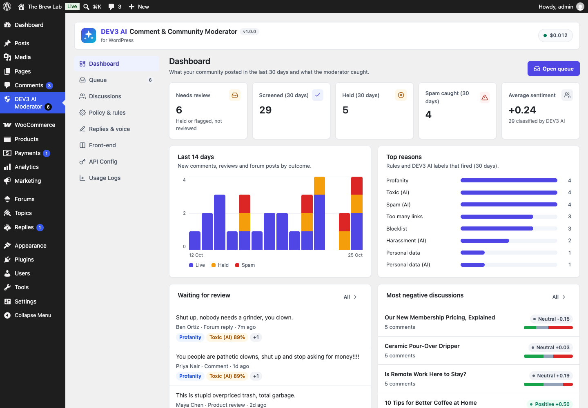
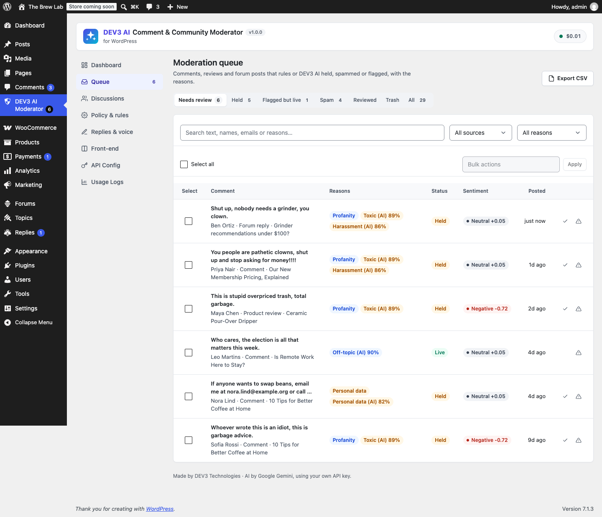
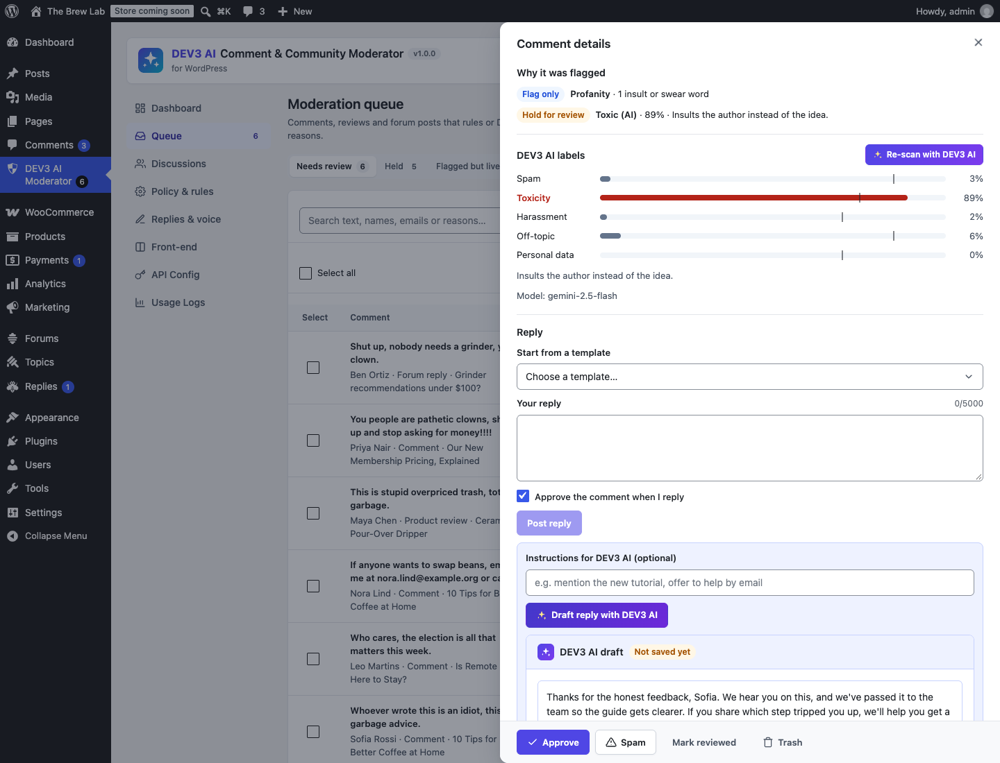
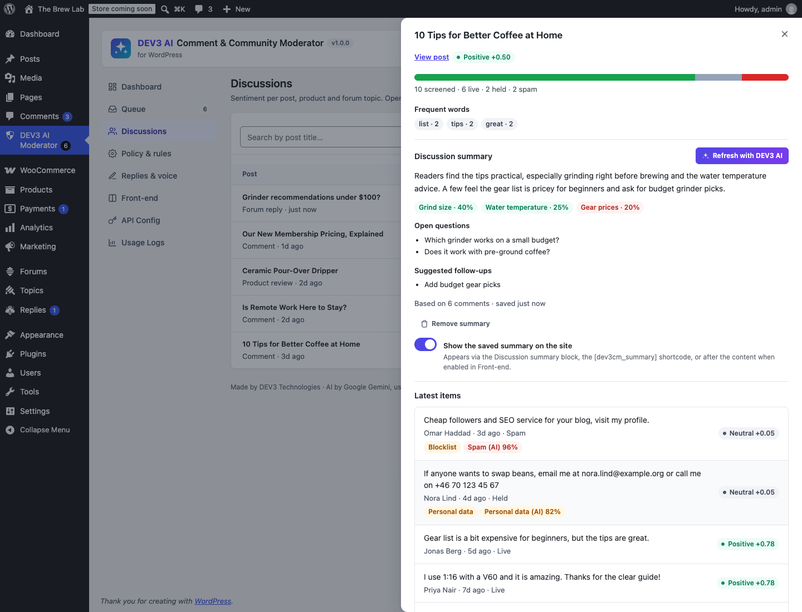
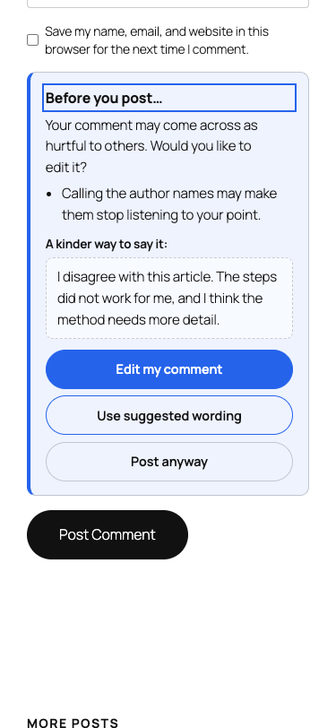
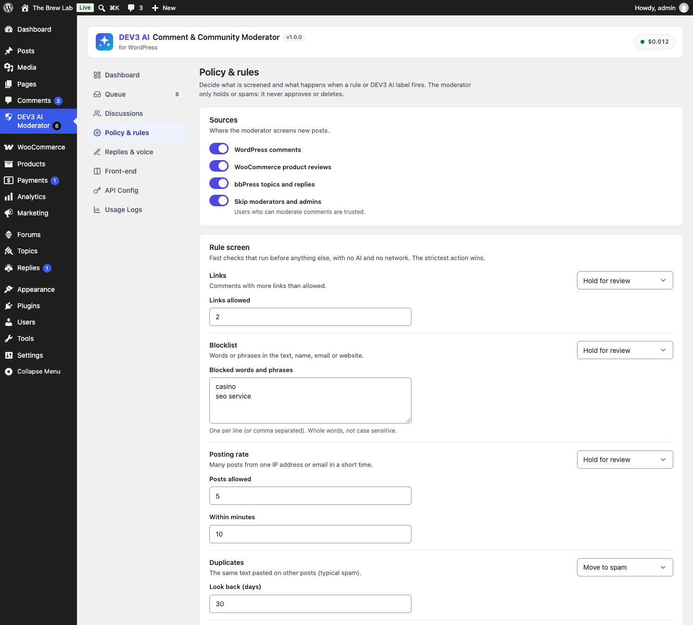

Install
- Requirements: WordPress 6.0+, PHP 7.4+ (tested on 8.3). Optional: WooCommerce 8+ (reviews), bbPress 2.6+ (forums), Akismet.
- In Plugins → Add New → Upload Plugin, upload
dev3-ai-comment-moderator.zipand activate it. - The menu DEV3 AI Moderator appears below Comments. Its bubble counts items that need review.
No licence key or activation is needed. Updates ship as new zips.
Quick start
- New comments are screened right away by the rule screen. Open Queue to see what was held, spammed or flagged and why.
- Add your Google Gemini key in API Config to add AI scores for spam, toxicity, harassment, off-topic and personal data.
- Tune actions and thresholds in Policy & rules; try them in the Policy tester.
- Run Scan existing content to include older comments and fill Discussions with sentiment.
- Set your brand voice in Replies & voice, and the visitor-facing nudge in Front-end.
Sources
| Source | What is screened | How status changes |
|---|---|---|
| WordPress comments | Comments on any post type (types comment; pingbacks, order notes etc. are ignored) | wp_set_comment_status, wp_spam_comment |
| WooCommerce reviews | Comments/reviews on products, with the star rating | Same as comments |
| bbPress | New topics (title + text) and replies | bbp_unapprove_*, bbp_spam_* (restorable) |
Users who can moderate comments (and bbPress moderators) are trusted and skip screening; switch this off under Sources.
Rule screen
Runs before anything else, with no AI and no network. Each rule has an action: Off, Flag only (shows in the queue, stays live), Hold for review or Move to spam. The strictest action wins, and content is only ever moved down (live → held → spam).
| Rule | Default | Notes |
|---|---|---|
| Links | Hold above 2 | Counts URLs, www. hosts and anchors. |
| Blocklist | Hold | Whole words/phrases in text, name, email and website. |
| Posting rate | Hold above 5 in 10 min | Per IP (hashed) or email. |
| Duplicates | Spam | Same normalised text by the same author/IP on another post, or on 2+ other posts within 30 days. |
| Personal data | Hold | Emails, phone numbers, card numbers (Luhn-checked), IP addresses. |
| Profanity | Flag | Built-in insult list; extend with dev3cm_profanity_words. |
| Akismet | Spam | Records Akismet's spam verdict as a reason. |
DEV3 AI policy
DEV3 AI scores each item from 0 to 100 % for five labels and gives a one-line reason. The post title and excerpt are sent along so off-topic can be judged, and the parent comment for replies.
- Before publishing (default): waits up to the timeout (8 s), then the rules decide and the AI retries in the background.
- In the background: the item is published per the rules and moved later if the AI says so.
- Policy matrix: per label, an action and the score that triggers it (defaults: spam 85 % → spam, toxicity 75 % → hold, harassment 70 % → hold, off-topic 85 % → flag, personal data 70 % → hold).
The AI never approves and never deletes. Once a moderator approves, holds or marks an item reviewed, the policy no longer moves it.
Queue
Views: Needs review, Held, Flagged but live, Spam, Reviewed, Trash, All. Filter by source and reason, search text/names/emails, select rows for bulk Approve, Hold, Spam, Mark reviewed, Re-scan with DEV3 AI or Trash (the WordPress trash, restorable). Click a row for details: full text, author, post, parent, reasons, AI label meters with your thresholds, history and the reply composer. Export the view as CSV.
Replies & voice
Reply from the item drawer as yourself (comment reply, review reply or bbPress reply), optionally approving the item at the same time. Templates support {author}, {post} and {site}. Draft reply with DEV3 AI writes a reply in your tone, guidelines and sign-off; you can edit it, regenerate or reject it. Nothing is posted until you click Post this reply.
Discussions & sentiment
Every post, product and forum topic with screened items shows its item counts, sentiment and a positive/neutral/negative mix. Sentiment comes from DEV3 AI when an item was classified, otherwise from a built-in lexicon. Open a discussion to see frequent words and to Summarize with DEV3 AI: a short summary, themes with their own sentiment, open questions and suggested follow-ups. Save it to keep it; a badge shows when new comments make it out of date.
Summaries on the site
Only saved summaries marked Show on site appear. Place them with the Discussion summary block, the shortcode [dev3cm_summary] / [dev3cm_summary post_id="123" title="no"], or set Front-end → Placement to After the post content. An optional note says the summary was written with AI and reviewed.
"Be kind" nudge
On comment, review and bbPress forms, the writer sees a gentle prompt when the text contains insults, all caps or piles of !!!. The check runs in the browser with no network. With Ask DEV3 AI before posting, the text is checked by DEV3 AI (6 s limit, cached, rate-limited, same-origin only) and the writer can accept kinder wording. The writer can always post anyway; server-side moderation still applies. Visitor text is neutral (no DEV3 branding) and follows your theme; set the accent colour in Front-end. An optional community note shows under the comment box.
Scanner & tester
Scan existing content creates records for comments, reviews and forum posts from the last N days (background job with progress, cancel and retry). Choose whether to add DEV3 AI scores and whether matches are moved per policy or only flagged. The Policy tester shows what the saved rules (and optionally the AI) would do with a sample comment; nothing is stored.
Google Gemini API key
- Create a key at Google AI Studio.
- Paste it in API Config and click Validate. It is stored encrypted and never sent to the browser. Or define
DEV3CM_GEMINI_API_KEYinwp-config.php. - Default models: gemini-2.5-flash (classification, replies, nudge) and gemini-2.5-pro for very long discussions.
Budget & usage
API Config sets a monthly budget (AI pauses when it is reached and the rules keep working), an AI on/off switch, a front-end AI switch (affects the nudge and the "before publishing" check), the result cache and PII masking. Usage Logs show requests, tokens and estimated cost per feature.
Privacy
Moderation records store author name, email, a hashed IP, an excerpt and the decision. They are part of WordPress personal-data export and erase (erase anonymises them), and are pruned after the retention period (Policy → Data). The plugin never deletes comments. A privacy-policy snippet naming Google Gemini is added to Settings → Privacy.
Hooks
| Hook | Type | Use |
|---|---|---|
dev3cm_rule_flags( $flags, $input ) | filter | Add your own rules: [ 'code' => 'x', 'detail' => '…', 'action' => 'hold' ]. |
dev3cm_policy_decision( $decision, $flags, $labels ) | filter | Override the final decision (none|flag|hold|spam). |
dev3cm_is_trusted( $trusted, $source ) | filter | Decide who skips screening. |
dev3cm_comment_types( $types ) | filter | Comment types to screen (default comment, review). |
dev3cm_profanity_words( $words ) | filter | Insult/profanity list (rules + nudge). |
dev3cm_sentiment_lexicon( $lex ) | filter | Non-AI sentiment words (-3..3). |
dev3cm_item_screened( $id, $result ) | action | After a new item is screened and stored. |
dev3cm_prompt_classify, dev3cm_prompt_reply, dev3cm_prompt_summary, dev3cm_prompt_nudge | filter | Adjust prompt templates. |
dev3cm_public_rate_limit( $limit, $bucket ) | filter | Nudge checks per minute per IP (default 12). |
dev3cm_ai_guard, dev3cm_mask_pii, dev3cm_model_prices | filter | Shared DEV3 core controls. |
REST API
Namespace dev3cm/v1. Admin routes need manage_options (filterable) and a REST nonce: items, items/<id>, items/<id>/action, items/bulk, items/<id>/classify, items/<id>/reply-draft, items/<id>/reply, threads, threads/<post>, threads/<post>/summarize, threads/<post>/summary, stats, scan, test, export/csv. Public: POST public/nudge { text } (same-origin, rate-limited).
FAQ
Does it work without an API key?
Yes. Rules, queue, replies with templates, lexicon sentiment, keywords, the local nudge and saved summaries all work without AI.
Can the AI hide a good comment?
It can hold one for review if it crosses your threshold; you approve it in one click and it will not be moved again. Raise the threshold or set the label to Flag only for a softer policy.
Does it slow down commenting?
Rules take milliseconds. The AI check in "before publishing" mode is capped by the timeout; use background mode for zero wait.
Does it work with page caching?
Yes. The nudge endpoint needs no nonce, so cached pages keep working.
Changelog
1.0.0 – Initial release.